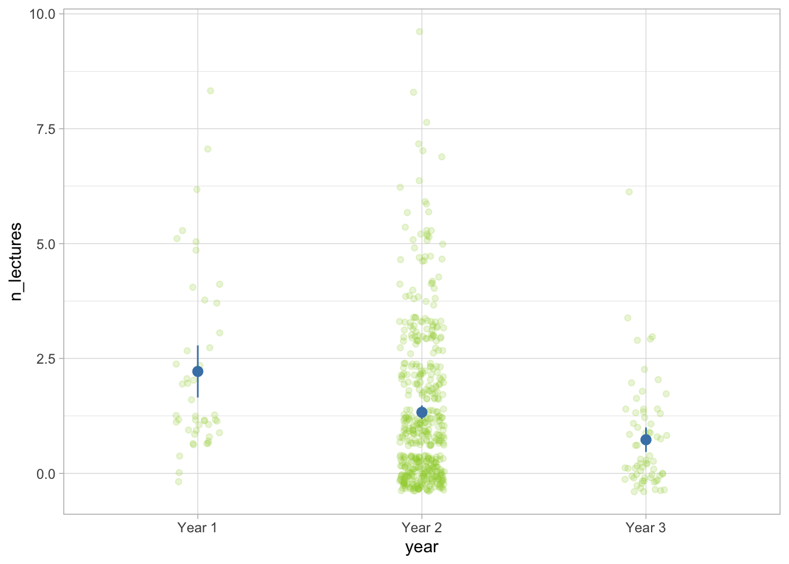
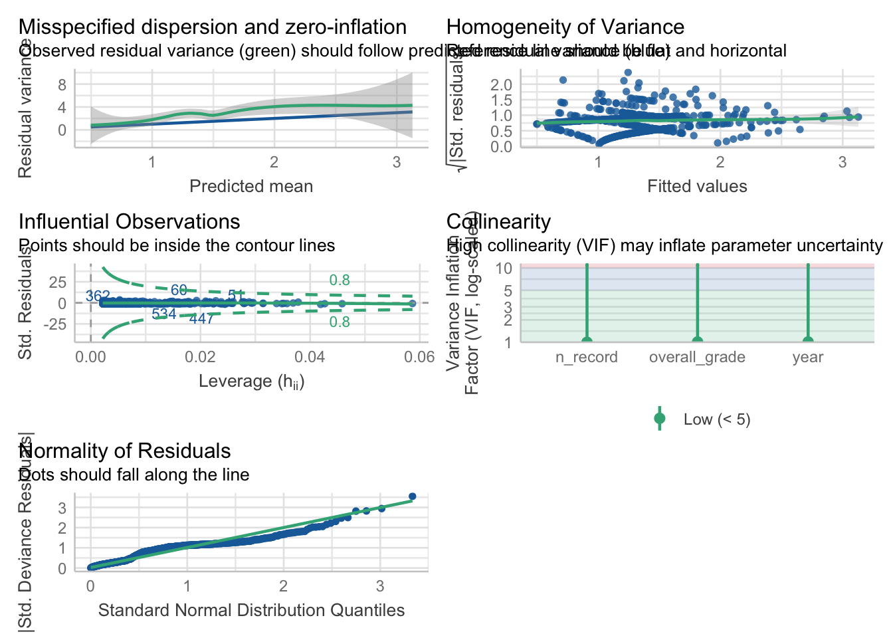

source("functions/helpers.R")2 Modelling counts
Tutorial under construction!
This tutorial is incomplete - the final version will be published by the end of Friday. Please come back later!
In the previous section, we looked at the consequences of pretending a bound asymmetrically distribution is unbound and symmetrical. In this tutorial, we’re going to discuss what happens if we assume that a distribution is continuous when, in fact, it is not.
Every model that we fit makes one fundamental assumption that more often than not won’t be highlighted on any diagnostic plots. It’s the assumption about the level of measurement of our variable. For example, logistic models assume that the outcome variable is a categorical binary variable, ordinal models assume the outcome is ordinal, Gaussian and Gamma models assume that it is continuous. The reason why software often doesn’t provide an immediately obvious way to check that this assumption is met is that it is out responsibility as the researcher to ensure the way we’re operationalising a variable is suitable for the kind of model we want to fit later.
Another level of measurement is counts. For example:
How many cups of coffee does an average lecturer drink per day?
How many children are there in a typical household?
How many goals are typical in a football game?
How many short-form videos does an average grad student scroll through per day when procrastinating work?
Counts are characterised as integers - this means that they can only be expressed as a whole number without decimal points. Despite this, they are another victim of the GLM tyranny, more often than not modelled as unbound continuous variables. The consequences of assuming a continuous level of measurement when the variable is measured in counts vary in severity, depending on the context. For example, if we say that an average lecturer drinks 3.5 cups of coffee per day, it implies that they either make half a cup of coffee (which is silly), or they make four and then pour out half of one (which is unhinged). However, if we say that a typical household consists of two parents, one dog, one cat, and 2.4 children, things suddenly take a dark turn.
In this tutorial, we’re going to look into ways of modelling count variables more sensibly. We’ll explore the following types of models:
Poisson models
Negative binomial models
Quasi-poisson models
Zero-inflated models
2.1 Scenario
A university lecturer wishes to understand the predictors of undergraduate student attendance in lectures. They record the number of lectures the students attended (
n_lectures) per 11-week term (with one lecture per week). For predictors, they considers:
Year of study - first, second, or third (
year)How many lecture recordings they accessed (
n_record)Average grade on the module (
overall_grade)The lecturer wants to include all predictors in the model. They only make one hypothesis based on prior experience:
H1: First year students will be more likely to attend lectures compared to second and third year students.
The inclusion of the remaining predictors is exploratory.
set.seed(11)
# 7 8
n = 3000
b0 = 3.1
b1 = -0.7
b2 = 0.02
b3 = 0.01
theta = 5
x1 <- rnorm(n) |> squish(1, 3) # year
x2 <- rnorm(n) |> squish(0, 11) # record
x3 <- rnorm(n)|> squish(0, 100) # grade
linear_response = b0 + b1*x1 + b2*x2 + b3*x3
exp_response = exp(linear_response)
y <- rqpois(n = n,
mu = exp_response,
theta = theta) |> squish(0, 11) |> as.integer()
df <- tibble::tibble(
y = y,
x1 = cut_interval(x1, 3) |> factor(labels = c("Year 1", "Year 2", "Year 3")),
x2 = x2,
x3 = x3
)
sample_df <- df |> dplyr::slice_sample(n = 584) #375
sample_df[1:150, ] <- sample_df[1:150, ] |>
dplyr::mutate(
y = ifelse(x1 %in% c("Year 3", "Year 2"), 0, x1)
)
sample_df <- sample_df |>
dplyr::mutate(
student_id = sample(x = 20000:30000, size = 584, replace = FALSE)
) |>
dplyr::slice_sample(n = 584, replace = FALSE) |>
dplyr::transmute(
student_id, n_lectures = y, year = x1, n_record = round(x2, 0), overall_grade = round(x3, 2)
)
write.csv(sample_df, "data/attendance_data.csv", row.names = FALSE)Packages
We’re using the following packages:
library(tidyverse)
library(easystats)
library(MASS) # for fitting negative binomial models The data
The data are stored in the attendance_data.csv. Download the data and import it to Posit Cloud. Once you’ve done so, you can read the data into R by running:
attend_tib <- here::here("data/attendance_data.csv") |> readr::read_csv()Rows: 584 Columns: 5
── Column specification ────────────────────────────────────────────────────────
Delimiter: ","
chr (1): year
dbl (4): student_id, n_lectures, n_record, overall_grade
ℹ Use `spec()` to retrieve the full column specification for this data.
ℹ Specify the column types or set `show_col_types = FALSE` to quiet this message.The year variable is a categorical variable with more than two levels. We’re going to convert it into a factor:
attend_tib <- attend_tib |>
dplyr::mutate(
year = factor(year)
)For the comparison specified in the hypothesis, we want “Year 1” to be coded as the baseline against which to compare the other two years. We can check the order of our levels with the levels() function:
levels(attend_tib$year)[1] "Year 1" "Year 2" "Year 3"“Year 1” is listed first, which means that R will use it as the baseline group. We don’t need to do anything else here, but if the groups weren’t in the correct order, we’d need to reorder them with the forecats::fct_relevel() function.
Descriptive statistics
We’re using the same code as usual for the descriptives. We’re also adding an argument include_factors = TRUE so that we get some summaries for the categorical variables.
describe_distribution(attend_tib, include_factors = TRUE) |>
display()| Variable | Mean | SD | IQR | Range | Skewness | Kurtosis | n | n_Missing |
|---|---|---|---|---|---|---|---|---|
| student_id | 24937.43 | 2884.07 | 5132.00 | (20026, 29973) | 0.03 | -1.21 | 584 | 0 |
| n_lectures | 1.33 | 1.64 | 2.00 | (0, 10) | 1.64 | 3.07 | 584 | 0 |
| year | (Year 1, Year 3) | 0.18 | 2.17 | 584 | 0 | |||
| n_record | 5.26 | 1.63 | 2.00 | (0, 11) | 0.08 | 0.13 | 584 | 0 |
| overall_grade | 54.58 | 13.49 | 17.05 | (0, 96.57) | -0.19 | 0.55 | 584 | 0 |
Some things of note - the average number of lectures attended is extremely low - less than two out of 11 lectures. This variable is also quite skewed and has excess kurtosis. Let’s see what it looks like. To spice things up, we’ll create a nice histogram this time, overlayed by a count line. If you’re copying and adjusting code, try copying line by line so you can see the changes gradually:
1ggplot2::ggplot(data = attend_tib, aes(x = n_lectures)) +
2 geom_histogram(fill = "yellowgreen", alpha = 0.4) +
3 geom_line(stat = "count") +
4 geom_point(size = 2, stat = "count") +
5 scale_x_continuous(breaks = seq(0, 11, 1)) +
6 theme_light()- 1
- Create the base layer, placing the number of layers on the x axis
- 2
- Add the histogram. We’re also changing the default colour and we’re making it a little transparent. This is optional (but looks nice)
- 3
- Add a line. Set the statistic used for calculating the values to be a “count”.
- 4
-
Add points. We can make them a little larger using the
sizeargument. As above, we’re requesting the “count” statistic. - 5
-
Change the scale to make sure the breaks are only at whole numbers and not at places with decimal points. We could just list all the numbers for the
breaksargument - e.g.c(1,2,3,4,5,6,7,8,9,10,11)- but it’s more efficient to request a sequence of numbers starting at 0, going up to 11 (because that’s how many lectures there were in total), increasing by 1 at each step:seq(0, 11, 1). - 6
- Add a nice theme.

Often the histogram itself is enough to give us the necessary info. However with count variables, adding the line and the points can be used to show that the outcome variable is indeed a count variable and that we’re going to treat it as such (as opposed to treating it as a continuous variable.
We can see that we have a right skewed distribution. Quite a lot of students did not attend any lectures at all or they went to just one lecture. Very few participants attended 10 lectures, and no-one attended all of them (number 11 doesn’t even show up on the plot unless we force the plot to do so).
For the hypothesis, we can create a dot plot instead of a scatter plot (because we have a categorical predictor):
1ggplot2::ggplot(data = attend_tib, aes(x = year, y = n_lectures)) +
2 geom_point(position = position_jitter(width = 0.1), alpha = 0.2, colour = "yellowgreen") +
3 stat_summary(colour = "steelblue", fun.data = "mean_cl_normal") +
theme_light() - 1
-
Set up the base layer. The predictor
yeargoes on the x axis, the outcome goes on the y axis. - 2
-
Add the points. We’re tweaking the default settings so the distribution of the points is a little easier to see. For
positionwe’re setting “position_jitter” which ensures the points are not stacked on top of each other. Thewidthargument defines how far out the points spread. We’re also changing the transparencyalphato 0.2 so we can see more of the points. Finally, we change the colour. - 3
-
stat_summaryadds the means and the confidence intervals - we request this by specifying “mean_cl_normal” in thefun.dataargument. When choosing colour, pick something that contrasts well with the scatter points in the background.

Based on the plot, it seems like Year 1 students have the best attendance (though also have the fewest data points and therefore the widest confidence intervals), followed by Year 2 and Year 3, who attend the fewest sessions.
2.2 Poisson models
More often than not, a distribution is defined by some version of two parameters - location and dispersion. Location tells us at which point to centre the distribution and dispersion tells us how far the points spread out. In a Gaussian distribution, we have the mean and the standard deviation. In Gamma models, we have shape and scale. They’re not exactly the same, but they serve a similar function.
Poisson models are simple creatures. They are only defined by one parameter \(\lambda\) (lambda) which represents both the location and the variance. This is because of the mean-variance relationship the models assume:
\[ V(Y) = E(Y) \]
In which the variance of Y (the outcome) will always be equal to the expected value of Y. Contrast this with the Gaussian models, which don’t assume a specific value as long as it’s constant (homoscedastic), or the Gamma models in which variance is equal to the square of the expected value.
They’re nice and simple to simulate too:
1poisson_dist <- rpois(n = 1000, lambda = 1)
2ggplot2::ggplot(data = NULL, aes(x = poisson_dist)) +
3 geom_histogram()- 1
-
Generate 1000 random numbers drawn from a Poisson distribution with the lambda parameter equal to 1. Save the result into an object called
poisson_dist. - 2
-
Add
poisson_distinto the base layer of a plot - 3
- Draw a histogram.

As expected, the distribution only generates integers (or whole numbers). We can confirm this with the head() function, which will print out the first six values from the object we enter into it:
head(poisson_dist)[1] 2 1 0 1 1 2The distribution is also left skewed. A Poisson distribution can only be left skewed or symmetrical. The larger the lambda parameter, the more symmetrical the distribution will be:
poisson_dist <- rpois(n = 1000, lambda = 10)
ggplot2::ggplot(data = NULL, aes(x = poisson_dist)) +
geom_histogram() 
Note that even if the distribution achieves perfect symmetry, we still can’t call it normal, because the values are not on a continuous scale.
Conversely, lambda can be smaller than 1, in which case the skew becomes more extreme and values will be bunched up around the lower end of the scale:
poisson_dist <- rpois(n = 1000, lambda = 0.6)
ggplot2::ggplot(data = NULL, aes(x = poisson_dist)) +
geom_histogram() 
This mean-variance relationship is very restrictive. Realistically, there aren’t many variables that strictly follow a Poisson distribution, but let’s not doom our model before we’ve given it a chance (spoiler alert…).
Fit the model
Let’s fit our model using the glm function.
Evaluate the model fit
check_model(attend_poiss)
First, let’s go through the plots we already know.
Posterior predictive check - we no longer see the smooth curves - this is not a problem, because we’re not working with continuous data. The predictions themselves are not great. The model predicts fewer counts for values 0, 1, and 2. The predictions are from 3 onwards, but that left tail is quite inacurate.
Homogeneity of variance - looks a little funky because of the criss-crossy pattern. Again, this is not a problem and caused by the fact that we’re working with counts. The line isn’t entirely straight flat, but overall not too wobbly. I’d say the model passes the vibe check on this criterion.
Influential observations - nothing flagged here.
Collinearity - all VIF values are low and not a cause for concern
Uniformity of residuals - the points wobble around the line.
Based on the posterior predictive check and the residuals, it seems like the model is not a great fit. This is confirmed by the plot that we skipped, which checks for over-dispersion.
Over-dispersion
Let’s take a closer look at this plot:

The straight blue line represents what kind of variance the model expects for different predicted mean. Recall that the mean-variance relationship is:
\[ V(Y) = E(Y) \]
It’s a little difficult to see on the plot, but the line is plotted in a way where value 1 on the x axis corresponds to the value of 1 on the y axis. Value 2 on x represents to 2 on y, and so on. We need the variance in our model (the green line with the ribbon) to follow this line. We can see that this is not the case. The green line wiggles above the straight line most of the time. This means that there is more dispersion in our model then the Poisson model allows - it is over-dispersed.
Although this case is pretty cut and dry, we can use the over-dispersion test from easystats to get a second opinion:
check_overdispersion(attend_poiss)# Overdispersion test
dispersion ratio = 1.927
Pearson's Chi-Squared = 1115.938
p-value = < 0.001Overdispersion detected.For a Poisson model, we’d expect the dispersion ratio to be 1. If it’s above 1, the model is over-dispersed, if it’s below 1, it’s under-dispersed. A p-value tells us whether this deviation from 1 is statistically significant.
Significance tests of assumptions
Generally, significance tests of assumptions are not the best idea because they because they encourage black and white thinking (over-dispersed vs under-dispersed) instead of nuanced evaluation. In larger samples, they will be more likely to sound an alarm even if the violation is minor. They might be helpful in an ambiguous situation where the plot isn’t clear, but even then a problem in one diagnistic plot will likely be echoed in at least one other plot. There is a significance test for pretty much every assumption. I will only include this one so that you know they exist, but I won’t cover any others. Because I don’t like them.
Under over-dispersion, the parameter estimates are valid, however the standard errors (and therefore confidence intervals and p-values) are not. On the whole, this model is clearly not well specified. We have some alternatives. Again, ideally we want to think about whether a distribution is suitable for our data before we even collected the data, and certainly before we start mucking about in the analysis stage. But let’s say that we’ve miscalculated. What are our options? Well, we still have:
Negative binomial models
Quasi-Poisson models
2.3 Negative binomial models
Negative binomial (NB) distribution allows us to model counts in situations where dispersion is is greater than the expected mean. Unlike Poisson, NB distribution has a separate dispersion parameter that allows the model to be a little more flexible. The variance (V) is modelled as:
\[ V(Y) = E(Y) + \frac{E(Y)^2}{k} \]
Which is the sum of the expected value of Y plus the square of the expected value divided by the dispersion parameter k . The k parameter therefore controls how far the values spread out. The smaller the k, the larger the dispersion and the extent of skewness are going to be (because dividing by a small number results in a larger number).
In the code below, the theta argument represents the k parameter:
nb_dist <- MASS::rnegbin(n = 1000, mu = 1, theta = 0.5)
ggplot2::ggplot(data = NULL, aes(x = nb_dist)) +
geom_histogram() 
Conversely, we can set theta to be very large, in which case the NB distribution will start to resemble the Poisson distribution. This is because we divide by a large number, so the fraction \(\frac{E(Y)^2}{k}\) will result in a very small value, and the variance will be very close to the value of the mean.
nb_dist <- MASS::rnegbin(n = 1000, mu = 1, theta = 100)
ggplot2::ggplot(data = NULL, aes(x = nb_dist)) +
geom_histogram() 
Fit the model
Let’s try this again, shall we? The function is a little different this time - we’re using the glm.nb from the package MASS to fit a negative binomial model. We still need to specify the formula and the data, but we don’t need to specify the family because glm.nb function can only fit negative binomial models:
attend_nb <- MASS::glm.nb(
n_lectures ~ n_record + year + overall_grade,
data = attend_tib
)Evaluate the model fit
check_model(attend_nb)
Posterior predictive check - this is a much better fit then before.
Homogeneity of variance: looks fine
Influential cases: none
Collinearity: none detected
Residuals - follow the line nicely.
Dispersion… wrong way around! This time, the variance is increasing at the slower rate than the model expects, as the green line with the ribbon departs from the predicted blue line around 1.5 on the x axis and continues below it. This is called under-dispersion.
Regarding my previous salty grumble about significance tests of assumptions, if we check dispersion with the test
check_overdispersion(attend_nb)# Overdispersion test
dispersion ratio = 0.952
p-value = 0.672No overdispersion detected.The ratio is very close to 1 even though the departure is quite substantial. The test really should pick up on the fact that the model suffers from under-dispersion (at least based on the documentation).
2.4 Quasi-Poisson models
A third type of model we’re going to try is the Quasi-Poisson model. Strictly speaking, Quasi-Poisson models don’t belong to the GLM family, but they are very GLM like, in that:
- They apply linearising link function to model the relationships of interest. This function is the natural logarithm, same as for Gamma and Poisson models.
- They assume a mean-variance relationship, specifically that \(V(Y) = \phi E(Y)\) . In Poisson models, the \(\phi\) parameter is assumed to be 1, and therefore the variance is assumed to be equal to the expected value. In Quasi-Poisson models, \(\phi\) is estimated from the data and can be different from 1. The larger the \(\phi\) the larger the variance.
- We fit them with the
glmfunction.
Unfortunately, we can’t really simulate a Quasi-Poisson distribution to show how it changes with a changing \(\phi\), because such a distribution doesn’t exist. In this sense, the models are different from GLM:
Because a Quasi-Poisson distribution doesn’t exist, the estimation cannot be based on Maximum Likelihood. It is based on Quasi-Likelihood.
Instead, the parameters are estimated in the same way, but in addition we need to estimate the \(\phi\) parameter, which is then used to adjust the standard errors, ensuring the inference (i.e. the p-values) is valid.
Because of the way \(\phi\) is estimated, the model can deal with over- or under dispersion. If we were to use robust models as a metaphor for Quasi-likelihood models, they’re a similar level of fix to heteroscedasticity-consistent standard errors (“HC4”, “HC5”, and so on. ). When we apply the HC4 correction, the parameter estimates are not affected, but the standard errors change because they are estimated from the model predictor matrix rather then based on an assumption of constant variance.
The drawbacks of Quasi-models
The general guidance is that we should use negative-binomial models when we have over-dispersed data, and only resolve to Quasi-Poisson if the issues with dispersion aren’t fixed under NB distribution.
Main reason being is that Quasi-likelihood models rob us of some of the benefits of full-likelihood models, such as the ability to compare models and evaluate improvement after adding predictors.
For example, imagine that we built our NB models bit by bit, by adding the predictors one after another:
attend_0 <- MASS::glm.nb(n_lectures ~ 1, data = attend_tib)
attend_1 <- MASS::glm.nb(n_lectures ~ year, data = attend_tib)
attend_2 <- MASS::glm.nb(n_lectures ~ year + n_record, data = attend_tib)
attend_3 <- MASS::glm.nb(n_lectures ~ year + n_record + overall_grade, data = attend_tib)We can then compare these models based on AIC, BIC, and pseudo R2 :
compare_performance(attend_0, attend_1, attend_2, attend_3, metrics = "common") |>
display()| Name | Model | AIC (weights) | BIC (weights) | Nagelkerke’s R2 | RMSE |
|---|---|---|---|---|---|
| attend_0 | negbin | 1861.1 (<.001) | 1869.8 (6.00e-03) | 2.04e-15 | 1.64 |
| attend_1 | negbin | 1843.4 (0.01) | 1860.9 (0.48) | 0.06 | 1.61 |
| attend_2 | negbin | 1845.3 (5.00e-03) | 1867.2 (0.02) | 0.06 | 1.61 |
| attend_3 | negbin | 1834.6 (0.98) | 1860.8 (0.49) | 0.09 | 1.60 |
We can see that Model 2 (in which we added the n_record predictor) is not really an improvement compared to the previous models. Generally, we’re looking for a model with the lowest AIC and BIC. We can also see that the \(R^2\) value doesn’t change from Model 1 to Model 2, but does improve for Model 3.
We can confirm this with a likelihood ratio test:
anova(attend_0, attend_1, attend_2, attend_3) |>
display(digits = 3)| Model | theta | Resid. df | 2 x log-lik. | Test | df | LR stat. | Pr(Chi) |
|---|---|---|---|---|---|---|---|
| 1 | 1.212 | 583 | -1857.067 | ||||
| year | 1.342 | 581 | -1835.397 | 1 vs 2 | 2 | 21.670 | 1.970e-05 |
| year + n_record | 1.342 | 580 | -1835.317 | 2 vs 3 | 1 | 0.081 | 0.777 |
| year + n_record + overall_grade | 1.422 | 579 | -1822.621 | 3 vs 4 | 1 | 12.695 | 3.666e-04 |
Here, the last column contains the p-value that tells us whether each model is a significant improvement compared to the previous model. The p-value for Model 2 is not statistically significant.
If likelihood-based comparisons are something we’re interested in, then we cannot use Quasi-Poisson model for estimation. But if we only want to estimate the parameters and make valid inference, they’re a good solution for dealing with over- or under-dispersion.
Fit the model
attend_qpoiss <- glm(
n_lectures ~ year + n_record + overall_grade,
data = attend_tib,
family = quasipoisson(link = "log")
)Evaluate the model fit
We don’t actually gain any additional insight from the model_check function - it will still tell us that there is over-dispersion based on the Poisson expectations, and the residuals will still indicate a suboptimal fit (because the check also expects a Poisson distribution). The posterior predictive check disappears, because there’s no theoretical distribution based on which to make predictions. The model fit statistics will also be based on Poisson, not on Quasi-Poisson. The only thing that is unique to Quasi-Poisson is the standard errors and p-values.
check_model(attend_qpoiss, residual_type = "normal")
This highlights the fact that a Quasi-Poisson is a “fix” to a problem, rather than a model that can be thoughtfully planned in advance. By default, we should aim for Poisson if it’s realistic, Negative-Binomial if we’re expecting over-dispersion, and only resort to Quasi-Poisson if the original plan fails.
Seeing as we’ve now exhausted our options, let’s extract the rest of the statistics for our model.
performance(attend_qpoiss)# Indices of model performance
Nagelkerke's R2 | RMSE | Sigma | Score_log | Score_spherical
-------------------------------------------------------------
0.127 | 1.597 | 1.388 | -1.674 | 0.037test_wald(attend_qpoiss)Only one model was provided, however, at least two are required for
comparison.
Fitting a null-model as reference now.Name | Model | df | df_diff | F | p
--------------------------------------------------
Null model | glm | 583 | | |
Full model | glm | 579 | 4 | 9.09 | < .001
Models were detected as nested (in terms of fixed parameters) and are compared in sequential order.Overall, the model explains 12.71% of deviance and is significant improvement over the null model F(4,579) = 9.09, p < .001.
Extract model parameters
model_parameters(attend_qpoiss, exponentiate = TRUE) |>
display(digits = 3)| Parameter | IRR | SE | 95% CI | t(579) | p |
|---|---|---|---|---|---|
| (Intercept) | 0.989 | 0.308 | (0.534, 1.809) | -0.034 | 0.973 |
| year (Year 2) | 0.631 | 0.094 | (0.476, 0.854) | -3.087 | 0.002 |
| year (Year 3) | 0.346 | 0.084 | (0.212, 0.550) | -4.384 | < .001 |
| n record | 1.008 | 0.030 | (0.950, 1.070) | 0.267 | 0.789 |
| overall grade | 1.013 | 0.004 | (1.006, 1.020) | 3.452 | < .001 |
attend_qpoiss <- glm(n_lectures ~ n_record + year + overall_grade, data = attend_tib, family = "quasipoisson")
attend_qpoiss |> check_model()
attend_qpoiss |> performance()# Indices of model performance
Nagelkerke's R2 | RMSE | Sigma | Score_log | Score_spherical
-------------------------------------------------------------
0.127 | 1.597 | 1.388 | -1.674 | 0.037attend_qpoiss |> model_parameters(exponentiate = TRUE)Parameter | IRR | SE | 95% CI | t(579) | p
----------------------------------------------------------------
(Intercept) | 0.99 | 0.31 | [0.53, 1.81] | -0.03 | 0.973
n record | 1.01 | 0.03 | [0.95, 1.07] | 0.27 | 0.789
year [Year 2] | 0.63 | 0.09 | [0.48, 0.85] | -3.09 | 0.002
year [Year 3] | 0.35 | 0.08 | [0.21, 0.55] | -4.38 | < .001
overall grade | 1.01 | 3.78e-03 | [1.01, 1.02] | 3.45 | < .001
Uncertainty intervals (profile-likelihood) and p-values (two-tailed)
computed using a Wald t-distribution approximation.predict(
attend_qpoiss,
newdata = tibble::tibble(
n_record = 5,
overall_grade = 70,
year = factor("Year 1", levels = c("Year 1", "Year 2", "Year 3"))
)
) |>
exp() |>
as.integer()[1] 22.5 Zero-inflated models
this is where our context knowledge becomes important - if there is another process modelling the zeros,
check_zeroinflation(attend_nb)# Check for zero-inflation
Observed zeros: 239
Predicted zeros: 237
Ratio: 0.99Model seems ok, ratio of observed and predicted zeros is within the
tolerance range (p = 0.984).check_zeroinflation(attend_qpoiss)# Check for zero-inflation
Observed zeros: 239
Predicted zeros: 166
Ratio: 0.69Model is underfitting zeros (probable zero-inflation).zero_inf_mod <- pscl::zeroinfl(n_lectures ~ n_record + year + overall_grade, data = attend_tib, dist = "poisson")zero_inf_mod |> model_parameters(exponentiate = TRUE)# Fixed Effects
Parameter | IRR | SE | 95% CI | z | p
--------------------------------------------------------------
(Intercept) | 1.51 | 0.39 | [0.91, 2.49] | 1.60 | 0.110
n record | 0.99 | 0.03 | [0.94, 1.04] | -0.40 | 0.690
year [Year 2] | 0.91 | 0.10 | [0.73, 1.13] | -0.86 | 0.392
year [Year 3] | 0.49 | 0.12 | [0.31, 0.78] | -2.98 | 0.003
overall grade | 1.01 | 3.32e-03 | [1.00, 1.01] | 2.27 | 0.023
# Zero-Inflation
Parameter | Odds Ratio | SE | 95% CI | z | p
------------------------------------------------------------------------
(Intercept) | 1.48e-04 | 5.54e-03 | [0.00, 1.36e+28] | -0.23 | 0.814
n record | 0.94 | 0.07 | [0.80, 1.09] | -0.85 | 0.393
year [Year 2] | 13333.94 | 5.01e+05 | [0.00, 1.22e+36] | 0.25 | 0.800
year [Year 3] | 12757.89 | 4.79e+05 | [0.00, 1.18e+36] | 0.25 | 0.801
overall grade | 0.98 | 9.36e-03 | [0.96, 1.00] | -2.05 | 0.040zero_inf_mod |> model_parameters(exponentiate = TRUE, bootstrap = TRUE, component = "zi")# Fixed Effects
Parameter | IRR | 95% CI | p
----------------------------------------------------
(Intercept) | 1.49 | [0.71, 2.78] | 0.264
n record | 0.99 | [0.93, 1.06] | 0.742
year [Year 2] | 0.91 | [0.70, 1.23] | 0.522
year [Year 3] | 0.48 | [0.25, 0.86] | 0.004
overall grade | 1.01 | [1.00, 1.02] | 0.054
(Intercept) | 6.49e-05 | [0.00, 0.23] | < .001
n record | 0.94 | [0.78, 1.10] | 0.430
year [Year 2] | 24438.84 | [9.26, 3.12e+07] | < .001
year [Year 3] | 18264.96 | [0.13, 2.56e+07] | 0.074
overall grade | 0.98 | [0.96, 1.00] | 0.054